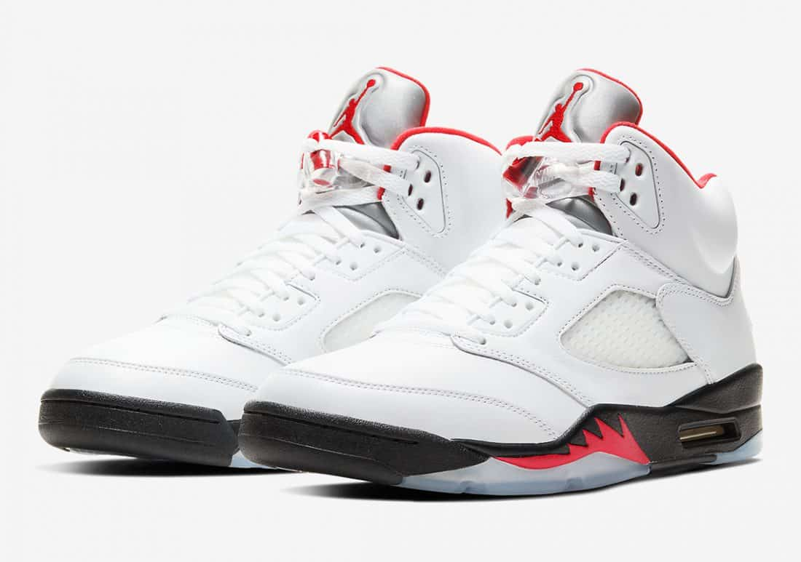
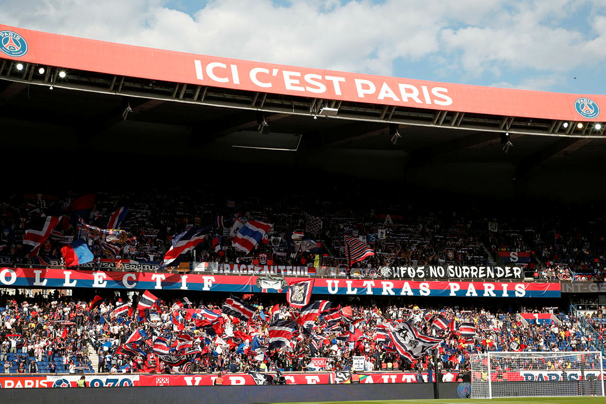
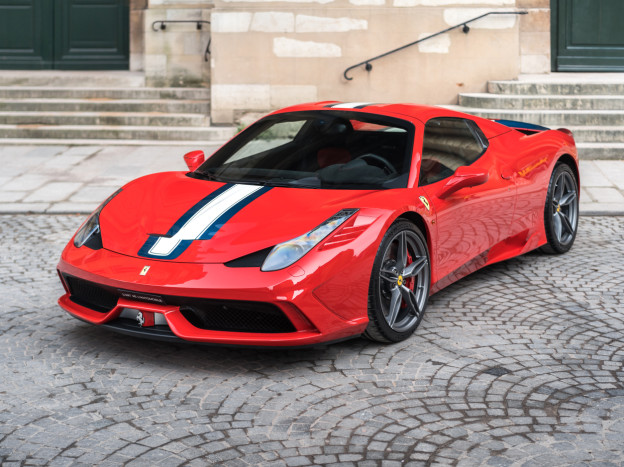

I'm a student from EMLV, i am in my first year of the PGE program. I have many passions like music, i love to practice sports espacially soccer, I support PSG team and i'm going to learn coding !
discover my school websiteI am passionate about sneakers since i am kid. I like shoes as an object but also for what they represent and the stories that can be around them. I already have a collection because i coolect shoes since my fourteen years old. My favorite brand is Jordan, all the models are amazing but my favorite one is the Jordan 5.
AIR JORDAN 5 FIRE RED
Since I'm a kid i already practice sports like judo or soccer. At this time, soccer is my favorite sport because i can practice is whith my friend, and i love to watch football on TV. I support PSG, it's the best team ever and ICI C'EST PARIS !
PARC DES PRINCES
I also like the wordl of automobile, it is very diversified. I like to drove a car, my favorite brands are BMW and Ferrari. I also like Sport auto like Formula 1 and my team and the favorite is Ferrari. My dream car is the Ferrari 458 speciale aperta, a V8 without turbo. It's better for the ears.
FERRARI 458 SPECIALE APERTA
I already listen music, i like every style of music and every style is adapt to a moment or a mood. Every moments is good to listen music.